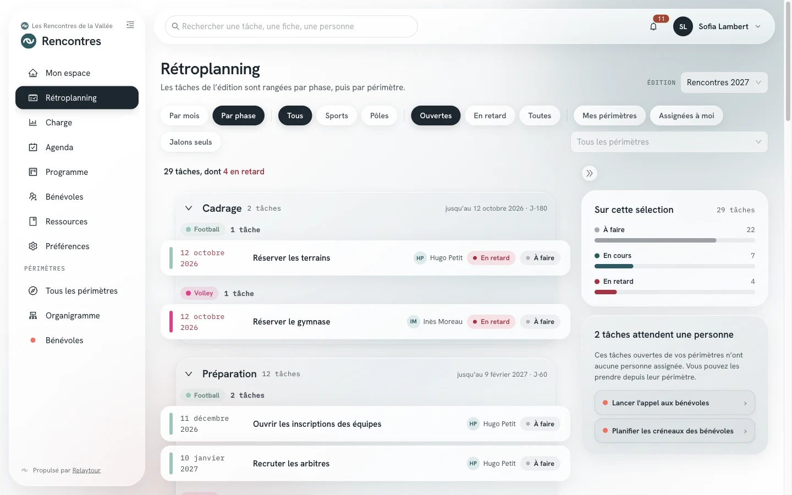
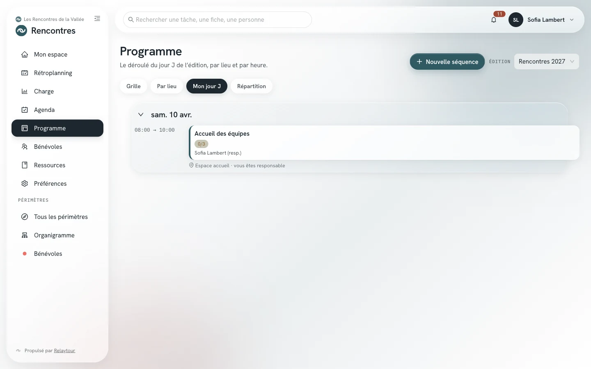

Une association organise chaque année un week-end de rencontres sportives. Ce cas pratique suit une édition, de sa création jusqu'au bilan.
Ce cas pratique propose un chemin parmi d'autres. Chaque étape renvoie au mode d'emploi qui décrit l'écran en détail.
Le cas
Un week-end, trois sports et quatre pôles
Les Rencontres de la Vallée, l'organisation d'exemple de Relaytour, réunissent chaque juin des équipes de football, de volley et de course à pied. Quatre pôles préparent l'événement pour tous les sports : la coordination, les bénévoles, la logistique et la communication.
Une quinzaine de référentes et référents se répartissent ces périmètres. Le jour J, des bénévoles sans compte viennent en renfort sur les terrains, à l'accueil et à la buvette.
Avant de commencer
Ce que vous mettez en place
Un admin de l'organisation crée l'activité. Un admin de l'activité règle ensuite sa nature, ses groupes, ses phases et ses modules. La liste « Premiers pas » de Mon espace guide ces réglages.
L'activité et ses périmètres
/<activité>/admin/activites
Nature « Événement »La période se nomme alors « édition » dans tous les écrans.
Groupes sport et pôleLes sports portent les épreuves. Les pôles portent le travail commun à tous les sports.
Un périmètre par sport et par pôleChaque périmètre reçoit un effectif, par exemple deux personnes par sport. Le modèle de départ des premiers pas propose ces périmètres, avec leurs tâches types et leurs fiches.
Modules Agenda et BénévolesL'agenda porte les réunions et les dates clés. Le module Bénévoles ouvre les appels à bénévoles.
PhasesLes quatre phases par défaut suffisent pour une première édition. Vous les adaptez ensuite à votre rythme. Elles se nomment Lancement, Préparation, Derniers réglages, Déroulement et bilan.

Les tâches d'une édition rangées par phase, sur l'organisation d'exemple.
Les délais ci-dessous sont indicatifs. Ils se comptent depuis le premier jour de l'édition.
1. Six mois avant : ouvrir l'édition
Un admin de l'activité crée l'édition et reprend les tâches de la précédente. Chaque échéance garde son écart avec le premier jour. Une première édition part des tâches types.
Les admins fixent l'effectif de chaque périmètre et affectent les personnes. Les souhaits et le formulaire public complètent l'équipe. Chaque périmètre reçoit un contact principal.
Les admins placent les dates clés et un point d'équipe par mois dans l'agenda global. Le prochain point d'équipe fixe les priorités que chaque personne lit dans Mon espace.
Chaque sport décrit ses séquences : les matchs, l'accueil, la remise des prix. Une séquence indique les renforts recherchés et les consignes publiques pour les bénévoles.
Un admin ouvre un appel sur toute l'édition et diffuse son adresse. L'équipe accepte les candidatures, puis répartit les personnes là où il manque du monde.
Chaque périmètre met à jour ses fiches méthode avec ce qui a changé. Un admin archive ensuite l'édition : ses appels ferment et ses candidatures disparaissent.
Le jour J, chaque personne de l'équipe retrouve ses places dans la vue « Mon jour J » du programme. L'application installée sur le téléphone s'ouvre sans barre d'adresse, comme une application ordinaire.

La vue « Mon jour J », sur l'organisation d'exemple.
Le mode d'emploi Installer l'application décrit l'ajout de l'espace organisateur à l'écran d'accueil.
Bonnes pratiques
Trois habitudes qui tiennent d'une édition à l'autre
Une fiche pour chaque poste qui revient
Chaque poste qui revient chaque année mérite sa fiche méthode. La personne qui le reprend y trouve le déroulé, les contacts de rôle et les pièges connus.
Les tâches communes en tâches partagées
La coordination crée une tâche partagée, par exemple « Envoyer la liste des équipes ». Chaque sport la reçoit avec son propre statut. La coordination suit l'ensemble depuis une seule tâche.
Un point d'équipe chaque mois
Un point d'équipe régulier cadence la préparation. Avant chaque point, chaque personne retrouve ses priorités dans Mon espace. La page « Charge » montre ce que porte chaque personne.
Pour rester simple
Ce dont vous n'avez pas besoin au départ
Le module « Classement » reste facultatif. Activez-le seulement si l'équipe le souhaite.
Le module « Documents » suppose que l'association a connecté son fournisseur cloud. Les fiches méthode suffisent pour une première édition.
Les réglages fins des phases, de l'organigramme et des notifications peuvent attendre la deuxième édition.